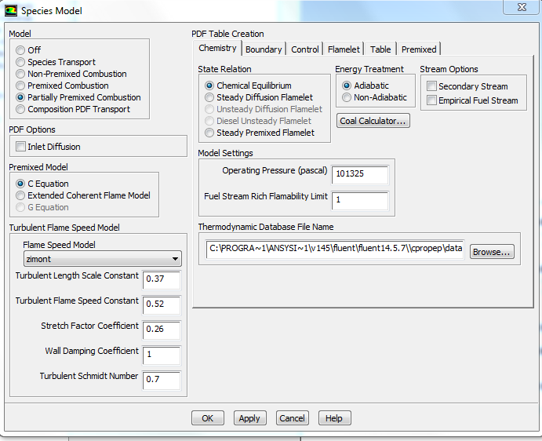
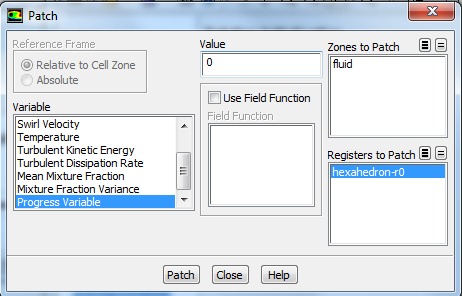
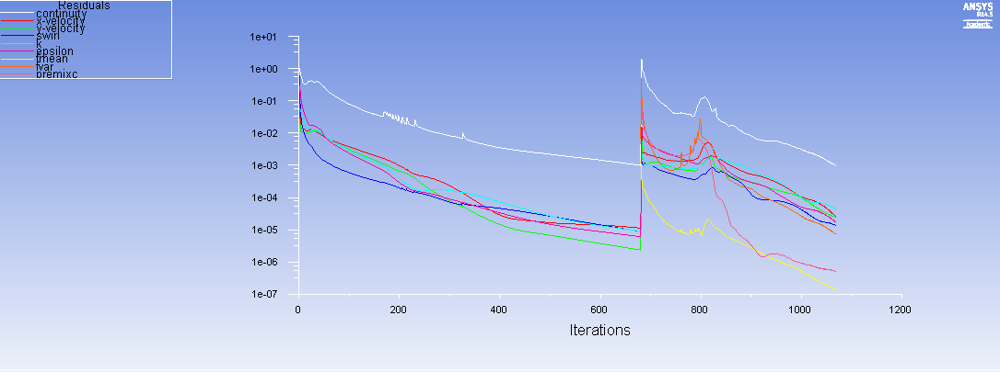

Exercise: Partially Premixed Combustion¶
Introduction¶In this tutorial, you will learn how to set up and solve a turbulent reactive flow—particularly, a partially premixed combustion case, in which there are both premixed and non-premixed conditions. You will:
- Use the probability density function (PDF) method to track the mixture fraction and modeling the chemistry in the system (used for non-premixed, mixing combustion cases).
- Learn the appropriate inputs and solver techniques using the turbulent Zimont Flame Speed model to close the turbulent quantities, typically used for premixed combustion cases.
- Analyze the results of the system
The non-premixed combustion model solves transport equations for conserved scalars and mixture fractions. The amounts of chemical species present are derived from the predicted mixture fraction distribution, present in the precomputed PDF tables. These tables are generated by knowing the species that can be present, as well as the inflow conditions and properties of the mixture.
For the premixed combustion component which will be solved at simulation runtime, the Zimont turbulent flame speed model includes the laminar flame speed (which determines the chemistry of the system) and the flame front evolution due to turbulence. The assumption to use this model is that the turbulence lengthscale in the flame is smaller than the flame thickness (Karlovitz number $K_a$ $>$ $1$) where
Combining these two models is straightforward. The reaction progress variable $c$ is used to track the location of the flame, called the flame front. Before (to the left of) the flame front at $c$ $=$ $0$, the mixture is unburnt, and the mass fractions and other variables are computed using mixture the precomputed mixture fraction PDFs. Inside the flame, a combination of the two models is used. In the burnt area (to the right of the flame at $c$ $=$ $1$), the equilibrium mixture fraction is computed.
This method is typically limited to combustion systems that only contain $2$ inflow streams. Using swirl conditions on one of the streams is useful as it promotes mixing of the two streams; reducing problems with flame initialization and extinction.
The turbulence model that will be used is the $2$ equation $k$ $-$ $ε$ model.
Problem Description¶
This is a partially premixed combustion case, which has inflows that reflect both premixed (fuel inflow) and no premixed (fuel and air mixing) conditions.
The fuel ($CH_4$) and air mixture has an equivalence ratio of $0.8$, defined in the Physics Setup. It is injected at $T$ $=$ $300\,\text{K}$ with an axial velocity of $50\,\text{m/s}$ and swirl velocity (Θ direction) of $30\,\text{m/s}$. The air inflow is at $T$ $=$ $650\,\text{K}$ and is injected at $10\,\text{m/s}$ axially, with no swirl. This case is axisymmetric and so the physical combustion chamber is assumed to be cylindrical; rotated about the axis of symmetry. The outflow is the pressure outlet at atmospheric pressure.
Mesh¶
- Download the mesh file and extract the FLUENT mesh file.
- Open Ansys Workbench.
- Drag and drop a Fluid Flow—Fluent case into the main workbench area and save the project.
- Double click on
Setup, skipping the Geometry and Mesh options. In the pop-up dialogue, select the $2D$ and Double Precision options.
- With FLUENT open, go to
File-Import-Mesh and select the file that you just downloaded.
- Go to
Solution Setup-General and click Display under mesh options to show the mesh.
It should look like this:
- If you go to
Mesh-Info-Size at the top menu of the screen, there should be $4700$ cells in the domain.
- The mesh was originally created in $inches$.
- Click on
Scale under the Mesh options then select in in the drop down box called Mesh Was Created In, then click Scale and close the dialogue box.
- To speed up future computations, select
Mesh -> Reorder –> Domain in the menu at the top of the screen.
This increases memory access efficiency.
Physics Setup¶
- In the General tab, select
Axisymmetric Swirl in the $2D$ space type. Keep the solver type as Pressure based to allow the premixed combustion model to be used.
- In the Models tab, double click on the
Viscous option to change it from Viscous-Laminar to k-ε (2 eqn.). Do not change any other parameters in the viscous dialogue box. Click Ok and close the dialogue box.
- Now double click on the
Species option to edit it, and change the model from Off to Partially Premixed Combustion.
- In the
Chemistry tab, change the Fuel Stream Rich Flammability Limit to $1$.
Changing this value means that FLUENT will perform equilibrium calculations at all mixture fractions ($1.0$ being the largest possible fraction). If this was not the case, the composition would be computed based on mixing instead, for fractions above the specified limit.

- Click on the
Boundary tab. Enter the values as shown in the following image.
These values correspond to $CH_4$ (Methane) and air (nitrogen and oxygen) injected at a lean (less than $1.0$) equivalence ratio of Φ $=$ $0.8$, representing the premixed fuel at $T$ $=$ $300\,\text{K}$. This ratio is defined as the ratio of the fuel to oxidizer ratio, to the fuel to oxidizer ratio at stoichiometric conditions. In addition, oxidizer (air) will be injected as a co-flow outside of the fuel stream, at $650\,\text{K}$. To add other species to the boundary, you would select the species you want and click Add under the Boundary Species options in this tab.
- Ignore the
Control and Flamelet tabs, and select the Table tab.
- Click
Calculate PDF Table to generate the pre-computed PDF table denoting mixture fractions that will handle the non-premixed combustion analysis.
- Investigate PDF table parameters and dependencies by clicking on
Display PDF Table, selecting desired options, and clicking Display.
- Click
Apply and OK to close the Species dialogue box.
- To write and save the PDF file that you just generated, go to
File-Export-PDF at the menu at the top of the screen.
Materials¶
- In the
Materials section, select the material Mixture, and click Create/Edit.
Note how Fluent has pre-selected the material as a mixture, and computes the density based on the PDF.
- Leave these pre-selected options. Click
Close.
Boundary Conditions¶
- In
Solution Setup - Boundary Conditions, because this is a turbulent model, all turbulence parameters must be specified on the boundaries of the combustor.
- Click to
edit the zone air (a velocity inlet). Change the Velocity Specification Method to Components, and set the Axial Velocity at $10\,\text{m/s}$.
- Change the
Specification Method to Intensity and Hydraulic diameter, and adjust the turbulence parameters as in the dialogue.
- Press
OK once all the changes have been made.
- Similarly, edit the
air-fuel boundary to have velocity components, with $50\,\text{m/s}$ axial velocity and $30\,\text{m/s}$ swirl velocity.
- The turbulent intensity should be $10%$, but the hydraulic diameter should be $0.0254\,\text{m}$.
- Clicking to the Species tab, change the mean mixture fraction to $1.0$.
This is because this stream will be taken as the fuel stream, whereas the previous air boundary did not need to be set beyond the default value of $0$ for the oxidizer stream.
- Click
Ok.
- Edit the
outlet boundary condition, which is a pressure outlet.
- Use $10%$ for
Backflow Turbulent Intensity, and $0.13\,\text{m}$ for the Backflow Hydraulic Diameter.
- Clicking to the
Species tab, change the Backflow Progress Variable to $1$.
This means that the boundary condition where the progress variable is $1.0$ will only be applied in the case that there is backflow from this outlet.
Numerical Solution¶
- Skipping to
Solution Controls, click Equations and deselect the Premixed Combustion and PDF options so that the only equations solved for are flow, swirl velocity, and turbulence as a preliminary solution. Press OK.
- Go to
Solution Initialization. Press Initialize; let Fluent initialize the domain as a Hybrid Initialization, taking all boundaries into account.
- Go to
Run Calculation. Click on Data File Quantities and select all of the mass fractions of species, the turbulent flame speed, and the stream function (or click the button at the top right of the selection screen to select all if you would like to monitor other variables). Press OK.
- Still on
Run Calculation, enter $1000$ under the Number of Iterations and run the simulation until it converges.
Now adapt a small region near the inlet with a progress variable of zero (this region will be entirely recalculated with combustion included)
- Go to
Adapt-Region at the menus at the top of the page.
- Select a small region near the
inlet: $X$ from $0.1$ to $0.14\,\text{m}$, $Y$ from $0$ to $0.03\,\text{m}$.
- Click
Mark, which marks $207$ cells for refinement, and then click Close.
- Patch this region by going to
Solution Initialization, and click Patch.
- Select
Progress Variable as the variable, and patch the region that you just marked by clicking Patch.
- Close the dialogue after patching.

- Now go back to
Solution Controls and click Equations.
- Reselect the
PDF and Premixed Combustion options so that all options are highlighted and will be solved for. Press OK.
- In Solution Methods, make sure that all solvers (
Momentum, Swirl Velocity, and Turbulent Kinetic Energy) are set to a Second Order Solver scheme.
- Go to
Run Calculation. Press Calculate.
- Allow the solution to converge (convergence criterion being that the residuals are all at least $1$x$10^{-3}$ or smaller).

Post-processing¶
- In FLUENT, Save the project.
- Double Click on
Load Results Workbench which opens CFD-Post.
- Create contours of:
- Stream Function
- Progress Variable (called Reaction Progress)
- Temperature
- Mass Fraction of CH4
- Turbulent Flame Speed
- To do this, click the
Contour button at the top menu.
- In the pop up dialogue box, name the contour after the variable that it will display and press
OK. For all contour plots, select periodic 1 for the location, and increase the number of contours to $51$.
- Change the drop down box under
Variable to the variable that you would like to create the contour of.
- Press
Apply to generate the contour, and repeat this process for all contours.
Progress Variable:
Temperature:
Mass Fraction of $CH_4$:
Turbulent Flame Speed:
|

 This content is available under a Creative Commons Attribution-NonCommercial 4.0 Unported License.
This content is available under a Creative Commons Attribution-NonCommercial 4.0 Unported License.